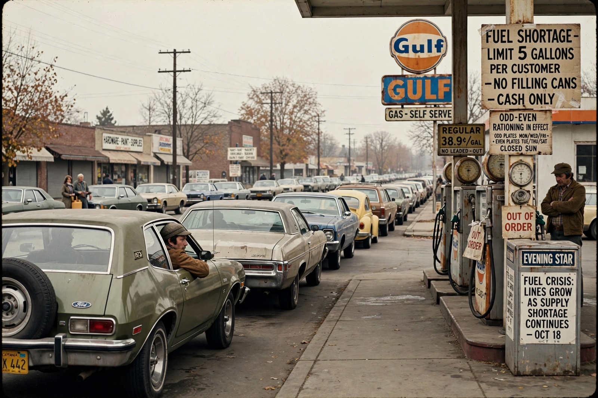

1973 oil crisis

The 1973 oil crisis began in October 1973 when the Arab members of OPEC, in response to Western support for Israel during the Yom Kippur War, proclaimed an oil embargo against the United States and several other countries and cut production. By the embargo's end in March 1974 the price of oil had risen roughly fourfold, from about US$3 to nearly US$12 per barrel.
The crisis caused fuel shortages, rationing and long queues at petrol stations in much of the West, contributed to stagflation and recession, and permanently changed energy policy and the car industry.
Course of the crisis
The embargo targeted the United States, the Netherlands, Portugal, Rhodesia and South Africa, while production cuts squeezed all importers. Prices on spot markets soared far above official prices. Governments introduced measures including fuel rationing schemes, Britain's three-day week for electricity conservation, and a 55 mph national speed limit in the United States.
The embargo ended in March 1974 after diplomatic efforts, but prices remained at the new level: the era of cheap oil was over, and OPEC's share of world production and pricing power had been demonstrated.
Consequences
Western governments created strategic petroleum reserves and, in 1974, the International Energy Agency to coordinate responses. Energy efficiency and diversification became policy priorities: France expanded Nuclear power, Japan overhauled its energy-intensive industry, and smaller, more economical cars gained market share at the expense of large American models.
Economically the shock fed inflation already rising from other causes and helped end the post-war boom. A second shock followed in 1979 after the Iranian Revolution. See also {L('Oil_price')} and {L('Energy_policy')}.
See also: Oil price · Energy policy · Petroleum · 1979 oil crisis · OPEC